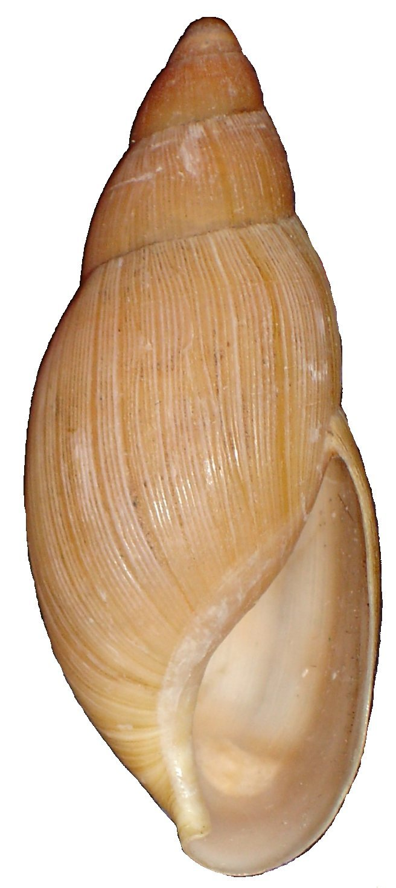
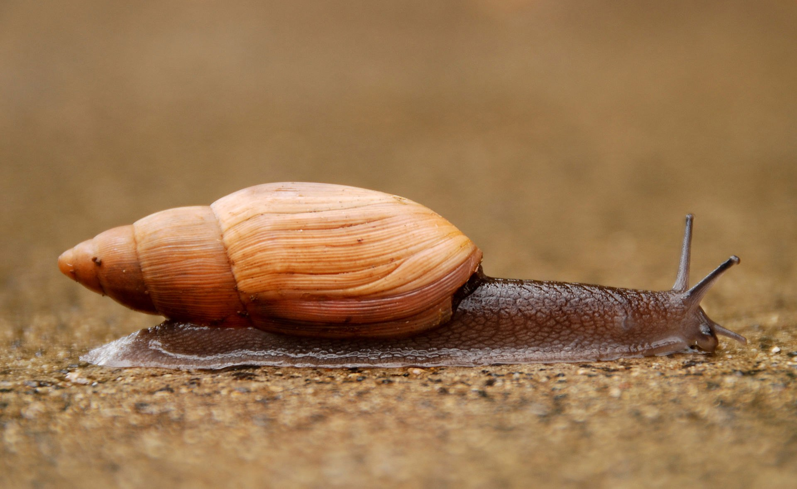
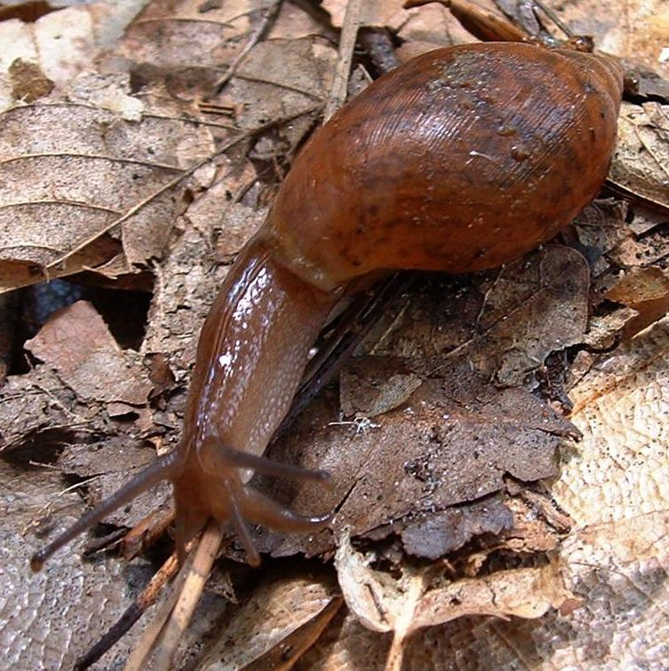
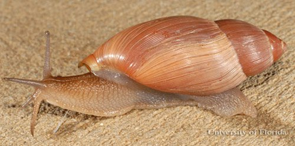
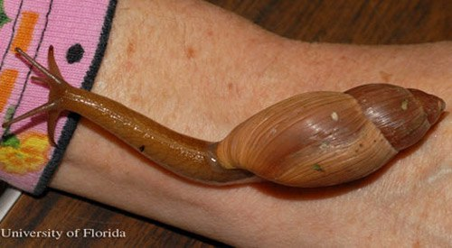
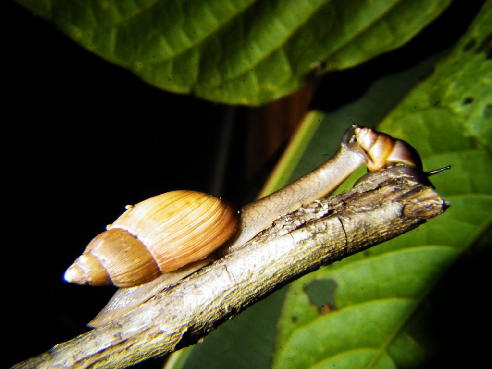
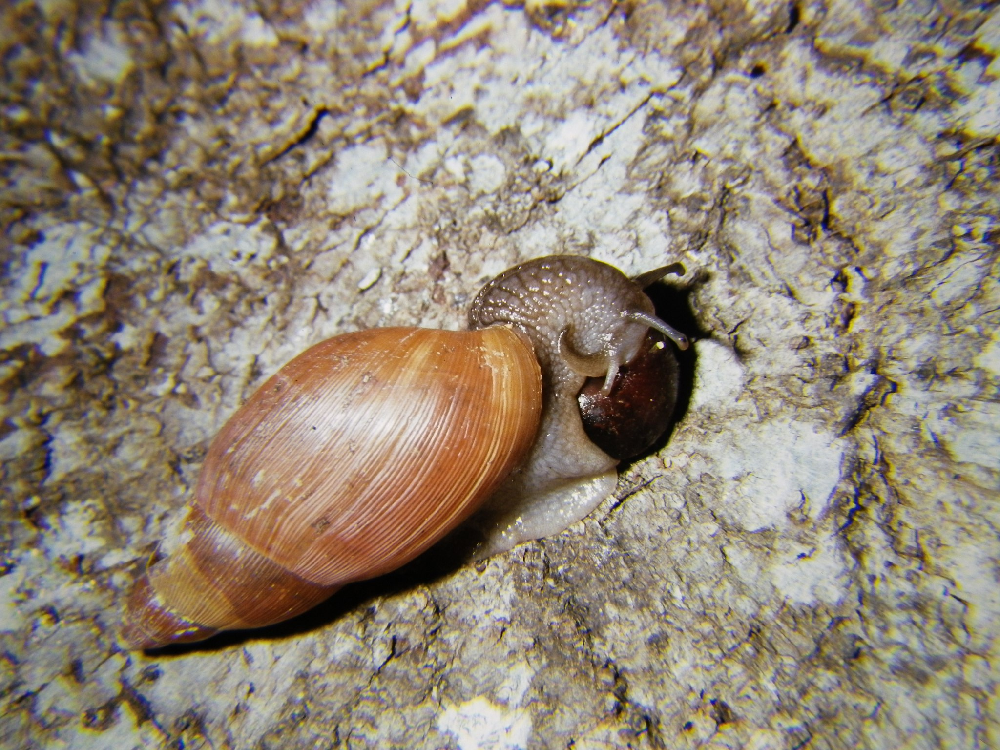
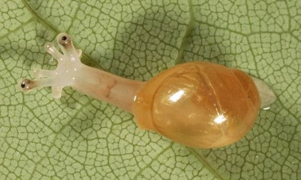
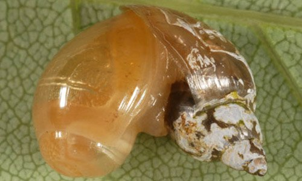

Другие виды
- Euglandina rosea (розовый волк)
Хищная тропическая наземная улитка, брюхоногий моллюск из отряда лёгочных улиток.
Описание:
Тело светло-серое или бурое, длиной от 7 до 10 см. Раковина удлинённая, веретеновидной формы, с толстыми стенками, узким овально-серповидным устьем и выдающимися линиями роста, буровато-розовая или светло-бурая, длиной обычно до 40—50 мм, а иногда до 60 и даже 76 мм, и 27,5 мм в диаметре. Нижние щупальца длинные, серповидно загнутые, почти касаются земли. (фото 1 - раковина, фото 2-5 - Euglandina rosea)
 | |
 |
 |
 |
 |
Ареал обитания:
Естественный ареал улитки E. rosea находится на юго-востоке Северной Америки и охватывает юго-восточное побережье США: юго-восточный Техас, Луизиана, Миссиссиппи, Алабама, Джорджия, Южная Каролина, широко распространена во Флориде. Обычно встречается одиночно в лиственных лесах, на обочинах дорог и городских садов.
Текущее распространения: E. rosea были намеренно завезены для контроля популяции вида ахатина фулика. В настоящее время распространены на Гавайях, Kiribai, Французская Полинезия, Американское Самоа, Новая Каледония, Вануату, Соломоновы острова, Палау, Гуам, Северные Марианские острова, Папуа - Новой Гвинеи, Японии, Гонконге, Тайване, Северной Борнео, Мадагаскар, Сейшельские острова, Маврикий, Реюньон, Индия, Андаманские острова, Шри - Ланка, Багамские острова и Бермуды.
Питание:
Быстрый и прожорливый хищник, охотится на других более мелких улиток и слизней, которых заглатывает целиком.
Губы удлинены и торчат, как щупальца, содержат химические рецепторы, которые используются для отслеживания добычи по следу из слизи.
Когда он находит свою добычу, он потребляет более мелких виды улиток целиком, а более крупные поедает таким образом, что их мягкие части полностью извлекаются из раковины (фото 6-7).
Наблюдение пищевого поведения показывает, что Е. rosea предпочитает мелких улиток, особенно если ракушку может проглотить целиком, предполагается, что такое пищевое поведение обосновывается необходимостью организма в кальции.
 |
 |
Размножение:
Живут около 24 месяцев. Е. rosea перекрестно оплодотворяющий, яйцекладущий вид, гермафродиты. Количество яиц в кладке - от 25 до 35, откладывают в небольшое углубление в почве. Вылупляются через 30 до 40 дней.
Фото 8 - "новорожденный" волчок, фото 9 - молодая особь питается другой улиткой.
Видео спаривания на youtube/com
 |
 |
Источники:
http://www.iucngisd.org/gisd/species.php?sc=92
http://www.columbia.edu/itc/cerc/danoff-burg/invasion..
http://entnemdept.ufl.edu/creatures/misc/gastro/terre..
Перевод - Марина Бутовская

|
|

|